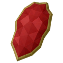
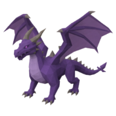

Dragon Scale
Other · Legendary
| Property | Value |
|---|---|
| Value | 500 coins |
| Sells for | 62.5 coins each |
| High Alchemy | 87 coins |
| Stacks | Yes |
Dropped by
| Monster | Level | Amount | Chance |
|---|---|---|---|
 Abyssal Drake | 112 | 1–3 | 80% |
Quest reward
- Beneath the Voidscar (×5)
Used to make
| Recipe | Level | Amount |
|---|---|---|
| ⚒️ Smith Draken Boots | 🔨 Forging 91 | 10 |
| ⚒️ Smith Draken Gauntlets | 🔨 Forging 92 | 10 |
| ⚒️ Smith Draken Helm | 🔨 Forging 94 | 15 |
| ⚒️ Smith Draken Platelegs | 🔨 Forging 96 | 25 |
| ⚒️ Smith Draken Platebody | 🔨 Forging 98 | 35 |